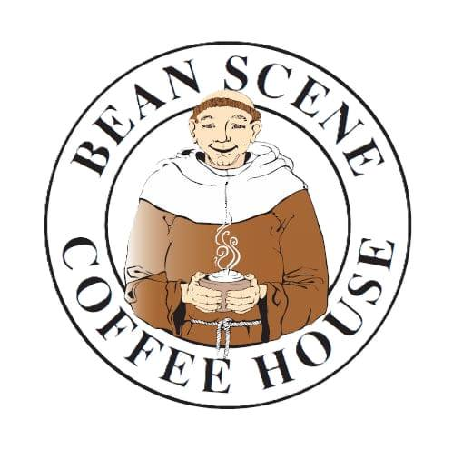
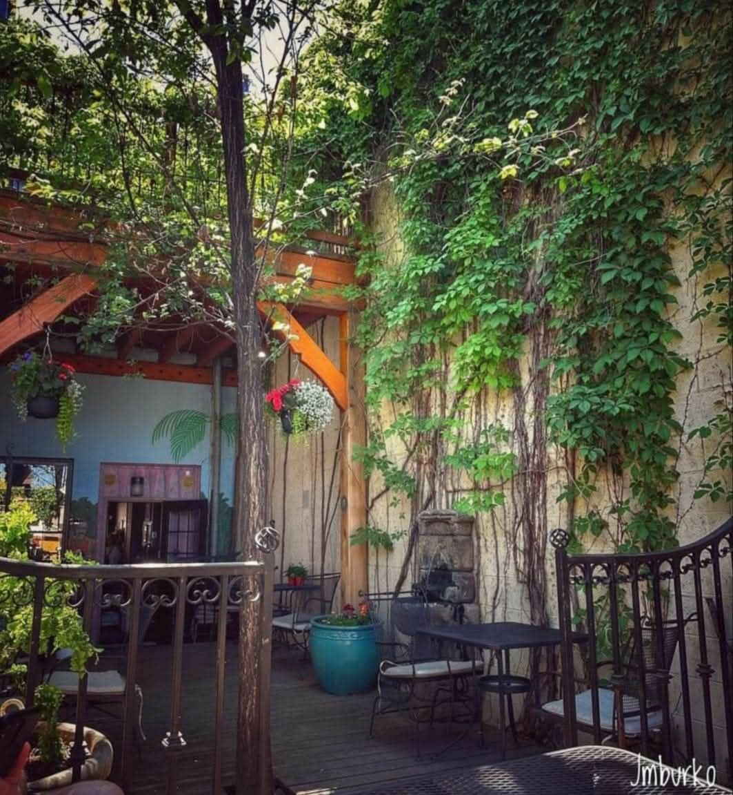
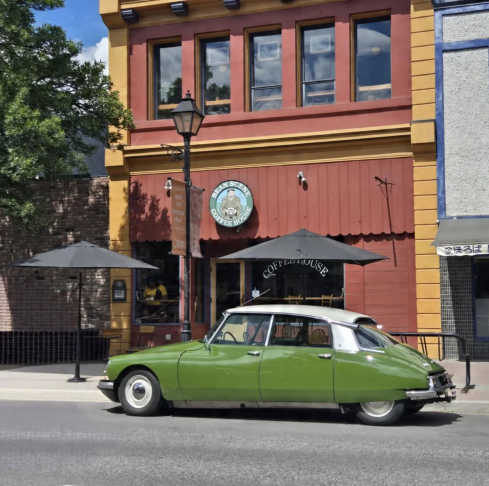

01 / YOUR DAILY PAUSE
Make time for a cup.
Start the morning or take a break from your downtown wander. Drop in and see what’s brewing.

bean sceneCOFFEE HOUSE · VERNON, BCYOUR DOWNTOWN VERNON COFFEE HOUSE
A little pause. A familiar face. A place to make yourself at home, right in the heart of Vernon.
2923 — 30th AvenueDowntown Vernon, British Columbia


2923 / 30TH AVENUEA PLACE TO BELONG
Some places are made for slowing down. A catch-up with a friend, a moment to yourself, or a conversation that lasts longer than your coffee. That’s the spirit of Bean Scene.
Step in from downtown Vernon and settle into a place with its own character — from the colourful storefront to the leafy courtyard.
Find your way hereMAKE A MOMENT OF IT
01 / YOUR DAILY PAUSE
Start the morning or take a break from your downtown wander. Drop in and see what’s brewing.
02 / A LITTLE HIDDEN CORNER
Find a seat in the courtyard and let the day slow down around you.
03 / THE LOCAL SCENE
Discover upcoming events and the latest from Bean Scene on our Facebook page.
THE BEAN SCENE
There’s more to the scene than coffee. Keep up with our latest news and upcoming events on Facebook.
See our Facebook updatesMEET YOU ON 30TH

OPENING HOURS
Holiday hours may vary. Give us a call before making a special trip.